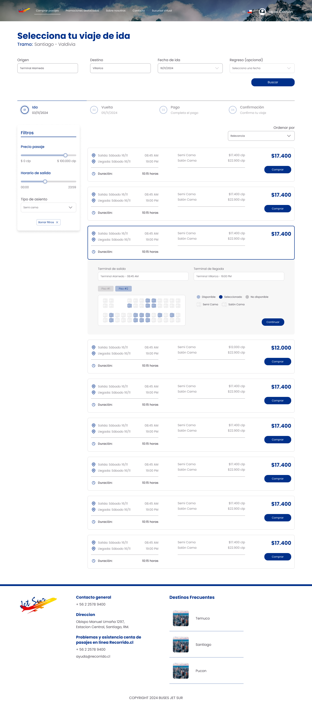

Web & App
Rediseño
UI Kit
Jet Sur
Rediseño del sitio de la compañía de buses para comprar y administrar pasajes sin depender de una web externa.

Rediseño del sitio de la compañía de buses para comprar y administrar pasajes sin depender de una web externa.
Jet Sur es una compañía de buses interurbanos en Chile. Su venta de pasajes en línea dependía de una plataforma externa (Recorrido.cl), con un look & feel genérico que no representaba a la marca ni le daba control sobre la experiencia.
El encargo fue modernizar el sitio y llevar la compra y administración de pasajes a una experiencia propia: reconocible, clara y lista para desarrollo, con una línea visual que respira el paisaje del sur de Chile.
El flujo se ordenó en momentos claros, cada uno con una sola tarea a la vista.
El home abre con un paisaje del sur y un buscador prominente sobre dos pestañas: comprar o administrar un pasaje. Origen, destino y fechas a un clic de la portada.
Un indicador de pasos (ida · vuelta · pago · confirmación) mantiene el rumbo. Cada viaje muestra horario, duración y tarifas; al expandirlo aparece el mapa de asientos por piso con su leyenda.

Color, tipografía y componentes se documentaron como un UI Kit para que desarrollo avanzara sin ambigüedad.
Componente reutilizable de búsqueda con campos de origen, destino y fechas, presente en home y en el flujo.
Horario, duración, tarifas y CTA en una unidad escaneable que se expande para elegir asiento.
Selector por piso con estados y leyenda de tipos (semi cama / salón cama) y disponibilidad.